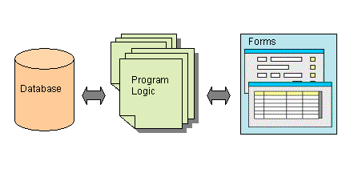
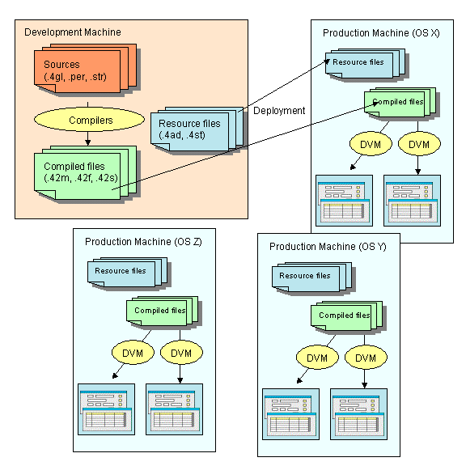
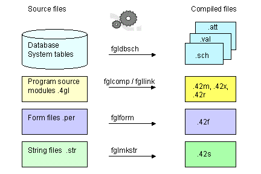
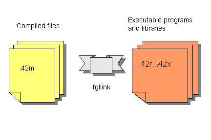
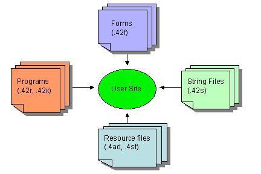

Summary:
You typically use Genero to build an interactive database application, a program that handles the interaction between a user and a database. The database schema that organizes data into relational tables gives shape to one side of the program. The needs of your user shape the other side. You write the program logic that bridges the gap between them.

An important feature of Genero BDL is the ease with which you can design applications that allow the user to access and modify data in a database. The Genero BDL language contains a set of SQL statements to manipulate the database, and interactive instructions that provide simple record input, read-only list handling, updateable list handling, and query by example (to search the database) using forms to facilitate interaction.
Genero BDL is compiled to p-code, which can be interpreted on different platforms by the Dynamic Virtual Machine (the Runtime system).
Genero separates business logic and the user interface to provide maximum flexibility:
Genero provides the ability to support different kinds of display devices using the same source code. One production release supports all major versions of Unix, Linux, Windows NT/2000/XP and Mac OS X. The same application can be displayed with a graphical device (GUI mode) as well as on a simple dumb terminal (TUI mode).
A single code stream can be written to support HTML, Java, Windows, X.11, WML, MacIntosh OS X and ASCII interfaces simultaneously.

Genero BDL comes with a set of useful programming tools, to help you in the application development process:
You can easily design and generate Reports. The output from a report can be formatted so that the eye of the reader can easily pick out the important facts. Page headers and footers, with page numbers, can be defined. Data can be grouped together, with group totals and subtotals shown. The output from a report can be sent to the screen, to a printer, to a file, or (through a pipe) to another program, and report output can even be redirected to an SAX filter in order to write XML.
Genero BDL supports multi-byte character sets by using the POSIX standard functions of the C library. Genero BDL uses byte-length-semantics to specify the length of a character string (i.e. CHAR(10) means 10 bytes). You must make sure that the database client locale matches the runtime system locale. For more details about internationalization support, see Localization.
The Localized Strings feature allows you to customize your application for specific subsets of your user population, whether it is for a particular language or a particular business segment.
When the standard Genero built-in functions and classes are not sufficient, you can write your own plug-ins by using the Dynamic C Extensions. This allows you to implement specific function libraries in C, which can be called from the BDL modules. Typical User Extensions interface with C libraries to drive specific devices, such as barcode scanners or biometric identification devices.
You can instantiate Java objects from Genero by using the Java Interface. This allows you to take benefit of the huge class library of Java.
Genero BDL is a high-level, fourth generation language with an open, readable syntax that encourages good individual or group programming style. You write your program logic in text files, or program source modules, which are compiled and linked into programs that can be executed by the Runtime system. Programs are easily enhanced and extended. This makes it easy for programmers to become productive quickly, no matter what programming languages they know. See Programs, Flow Control, Functions for additional information.
For additional information, see SQL Programming.
Writing the code for interactive database applications has been simplified for you in Genero BDL; single statements automatically compile into the lines of program code required for the common tasks associated with such applications. These interactive statements allow the program to respond to user input. Genero BDL introduces a major improvement with the DIALOG instruction, allowing parts of a form that have different functionality to be handled simultaneously.
In Genero, programs manipulate Window and Form objects to define display areas for interactive statements within your program. The Abstract User Interface (AUI) tree contains a definition of these objects. You can open as many windows and forms as needed, subject only to the limits of memory and the maximum number of open files on the platform you are using.
The OPEN WINDOW statement creates and opens a new window on the user's screen. The runtime system maintains a stack of all open windows. When you execute this statement to open a new window, it is added to the window stack and becomes the current window. You can modify the window stack with the CURRENT WINDOW and CLOSE WINDOW statements. With the OPEN WINDOW ... WITH FORM statement you open a window on the screen, load a compiled form from disk into memory, and make it ready for use.
The DISPLAY instruction allows you to display program variable data in the fields of a form and continue the program flow without giving control to the end user.
The MENU instruction is typically used in Text User Interface applications to handle user choices and activate a specific function of the application.
The DISPLAY ARRAY instruction can be used to show a list of records. It allows the user to view the contents of a program array of records, scrolling the record list on the screen and choosing a specific record.
The INPUT instruction is designed for simple record input. It enables the fields in a form for input, waits while the user types data into the fields, and proceeds after the user accepts or cancels the dialog.
The INPUT ARRAY instruction supports record list input. It allows the user to alter the contents of records of a program array, and to insert and delete records.
The CONSTRUCT instruction is designed to let the user enter search criteria for a database query. The user can enter a value or a range of values for one or several form fields, and your program looks up the database rows that satisfy the requirements.
The DIALOG statement allows you to combine INPUT, DISPLAY ARRAY, INPUT ARRAY and CONSTRUCT functionality within the same window/form.
User actions can fire the execution of program of code called action handlers. The actions can be displayed to the user as action views - buttons, toolbars, or pull-down menus in the application window. When the user makes a selection, the corresponding action is executed.
The interactive MENU statement can be used to define the list of action handlers that can be triggered. Or, the ON ACTION clause of interactive instructions, such as INPUT, INPUT ARRAY, DISPLAY ARRAY, CONSTRUCT, and DIALOG, can be used to implement the code to be executed for a given action.
Common actions, such as accept (dialog validation) and cancel (dialog cancellation), are already pre-defined for you in accordance with the interactive instruction.
Action Defaults allow you to define default decoration attributes (text, image) and functional attributes (accelerator keys) for the graphical objects associated with actions.
The BDL language provides built-in functions to perform many basic tasks, as well as built-in classes that can be used to manipulate the user interface. Dynamic C Extension libraries are part of the standard package; see File Manipulation functions and Mathematical functions.
The end-user of a program does not know about the database schema or your carefully designed program logic. As the user sees it, the application screens, and the menus that invoke them, are the application. The arrangement of fields, labels, and other form objects, and the behavior of the form as the user presses different keys or buttons and selects different menu options, create the personality of the program.
You can define the application screens, or forms, in text-based Form Specification Files (.per) These form files are translated by the Form Compiler to produce the Runtime Form Files (.42f) that are deployed in production environments. Since form files are separate from the other parts of your program, the Runtime Form Files can be used with different programs.
Unlike compiled program files, the translated Runtime Form Files are XML documents that describe the form elements, enabling portability across display devices. The XML file can also be written directly, or it can be generated or modified from your program code using the methods provided with Genero Built-in Classes.
You can design your form to group objects in horizontal and vertical boxes, display it as a folder of pages, and use menus, toolbars, or buttons to trigger actions. You can associate an array of data in the program with an array of fields on the form (screen-array), so the user can see multiple rows of data on the screen. In addition to the form fields and screen records, your form can contain objects such as progressbars, checkboxes, radiogroups, comboboxes, and images. See Form Specification Files for additional information.
The appearance of form objects can be standardized using Presentation Styles and Action Defaults.
Different parts of the form can be handled simultaneously using the BDL instruction DIALOG.
What happens when a user executes a Genero BDL application? The Genero Runtime System creates the Abstract User Interface tree, and the Genero Front End makes this abstract tree visible on the Front End Client, such as the Genero Desktop Client, Genero Web Client, and Genero Java Client. When a user interaction statement takes control of the application, the copy of the tree on the Front End is automatically synchronized with the Runtime system tree by the Front End Protocol, an internal protocol used by the Runtime System.

Default XML files describe the appearance (decoration) of some of the graphic objects on the user's screen. These files may be customized, or replaced with your own versions.
A set of XML Utilities are provided to allow you to create and modify XML documents.
A Genero BDL program can consist of a single source code module, but generally it will be organized in multiple modules as well as form specification files and perhaps localized string files. Database schema files are also required, if you have defined program data types and variables in the terms of an existing database column or table by using the DEFINE ... LIKE statement.
The tools that Genero provides to compile the various files that will make up your application, and the file extensions of the source code and corresponding compiled files, are listed below, and an explanation follows:

The compiled source code modules can be linked into a .42r program that can be executed by the Runtime System. Compiled modules can also be grouped together into a .42x library that can then be used to build .42r programs:

It is also possible to declare what modules are needed by the current module, in order to define the dependency between 4gl modules. When using this language feature, it is no longer required to link modules together to build a program. For more details, see the IMPORT FGL instruction.
Database Schema Files are used during program compilation to define data types, default values, display attributes and validation rules for form fields and program variables. You must generate database schema files each time the database structure changes, before compiling any other parts of your application.
The SCHEMA statement in program source files and form files identifies the database schema file to be used. The FGLDBPATH environment variable can be used to define a list of directories where the compiler can find database schema files.
The Schema Extractor (fgldbsch) is the tool provided to generate the database schema files from a real database. Database schema files are generated from the system tables.
Example:
fgldbsch -db <database_name>
It is important that the schema file of the development database corresponds to the production database; otherwise, the elements defined in the compiled version of your modules and forms will not match the table structures of the production database.
The primary file produced by the utility is:
<database>.sch - the file containing the data type definition of all columns selected during schema extraction.Genero BDL provides a source code compiler named fglcomp, which generates hardware-independent pseudo-machine code (P-code). This code is not directly executable by the operating system: it is interpreted by the Genero BDL runtime system (a program named fglrun, and called "runner").
The compiled P-code modules are binary. The files are not printable or editable as text.
This tool compiles a program source module into a p-code version. The compiled module has an extension of .42m.
If a compilation error occurs, the text file <filename>.err flagging the errors is created. You can display directly the compilation errors by using the -M option.
Example:
fglcomp <modulename>.4glRunning the program:
fglrun <modulename>.42mIf your program consists of more than one module, the modules must be linked together prior to execution, by the fgllink tool.
This tool assembles multiple p-code modules compiled with fglcomp into a single .42r program or a .42x library.
Example to create a program:
fgllink -o <programname>.42r <module1name>.42m <module2name>.42m ...
Running the program:
fglrun <programname>.42r
Example to create a library that can be linked into other programs:
fgllink -o <libraryname>.42x <module1name>.42m <module2name>.42m ...
Form specification files are used by the Form Compiler (fglform) to produce the Runtime Form Files that are deployed in production environments. The form files have an extension of .per . Unlike compiled program files, the generated Runtime Form File is an XML document that describes the form elements. The Runtime Form Files have an extension of .42f.
If a compilation error occurs, the text file <filename>.err flagging the errors is created. You can directly display the compilation error by using the -M option.
Example:
fglform <formname>.per
The fgl preprocessor can be used with the 4gl compiler and the form compiler to transform your sources before compilation, based on preprocessor directives. It allows you to include other files, to define macros that will be expanded when used in the source, and to compile conditionally.
See The Genero BDL Preprocessor for details.
Source String Files (<filename>.str ) containing the text of the Localized Strings that are used in your application must be compiled to binary files in order to be used at runtime. By default the runtime system expects that the Source String file will have the same filename as your program. The compiled file has an extension of .42s.
Example:
fglmkstr <filename>.str
As an assistance in creating the Source String Files, the -m option of the fglcomp and fglform tools can be used to extract all the localized strings that are used in your source code modules and forms.
Example:
fglcomp -m <modulename>.4gl
The output file will be <modulename>.str . This extracted file can be edited to assign text to the localized strings, and combined with other extracted files into a single <programname>.str file.
Note: Windows or Unix-based makefiles may be used to automate the process of compiling and linking programs.

The following program files must be deployed at the user site:
Front-end clients, such as Genero Desktop Client and Genero Web Client, make the application available to the user.
The FGLPROFILE configuration file can be used to change the behavior of programs, and environment variables can be set for Genero BDL.
This Business Development Language Manual (User Guide) is a complete guide to Genero BDL language features, with explanations and sample code:
On-line and self-paced Genero BDL training classes are offered. Instructor-led classes are also available; please call your regional sales office for information.